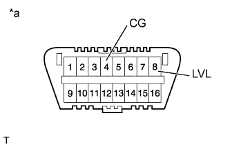
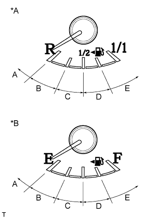

СИСТЕМА ОСВЕЩЕНИЯ > ИНИЦИАЛИЗАЦИЯ |
| 1.ПОДГОТОВЬТЕ АВТОМОБИЛЬ ДЛЯ ВЫПОЛНЕНИЯ ИНИЦИАЛИЗАЦИИ |
Разгрузите багажное отделение и автомобиль, и убедитесь, что запасное колесо, инструменты и домкрат находятся на своих местах.
Убедитесь, что в автомобиле нет пассажиров.
Выключите фары.
Установите автомобиль на ровной поверхности и не изменяйте высоту подвески автомобиля.
| |||||
| 2.ПРОВЕРЬТЕ КОНТРОЛЬНУЮ ЛАМПУ AFS OFF |
Поверните замок зажигания в положение ON (ВКЛ) и проверьте контрольную лампу.
| Условие | Заданные условия |
| ЭБУ устройства поворота фар заменен новым. | Контрольная лампа мигает 6 раз подряд с частотой 2 Гц. |
| Выполнялись снятие и установка ЭБУ устройства поворота фар, замена заднего датчика высоты подвески, снятие и установка заднего датчика высоты подвески, замена узлов и деталей подвески и т.д. | Контрольная лампа горит в течение примерно 3 секунд, а затем гаснет (функция проверки ламп). |
|
| ||||
| |||||
| 3.ИНИЦИАЛИЗАЦИЯ ЭЛЕКТРОННОЙ СИСТЕМЫ |
|  |
Соедините контакты 4 (CG) и 8 (LVL) разъема DLC3 с помощью SST.
| *a | Вид спереди разъема DLC3 |
|  |
Включите и выключите ближний свет фар с помощью переключателя света фар в течение 20 с после соединения контактов.
| *A | для моделей для стран Европы |
| *B | кроме моделей для стран Европы |
| Уровень топлива | Число включений и выключений ближнего света фар |
| Уровень топлива находится в диапазоне A | 1 |
| Уровень топлива находится в диапазоне B | 2 |
| Уровень топлива находится в диапазоне C | 3 |
| Уровень топлива находится в диапазоне D | 4 |
| Уровень топлива находится в диапазоне E | 5 |
Проверьте контрольную лампу.
| Условие | Заданные условия |
| ЭБУ устройства поворота фар заменен новым. | Мигает 6 раз с частотой 2 Гц → непрерывно мигает N* раз с частотой 2 Гц. |
| Выполнялись снятие и установка ЭБУ устройства поворота фар, замена правого заднего датчика высоты подвески, снятие и установка правого заднего датчика высоты подвески, замена узлов и деталей подвески и т.д. | Выкл → непрерывно мигает N* раз с частотой 2 Гц. |
|
| ||||
|
| ||||
|---|---|---|---|---|---|